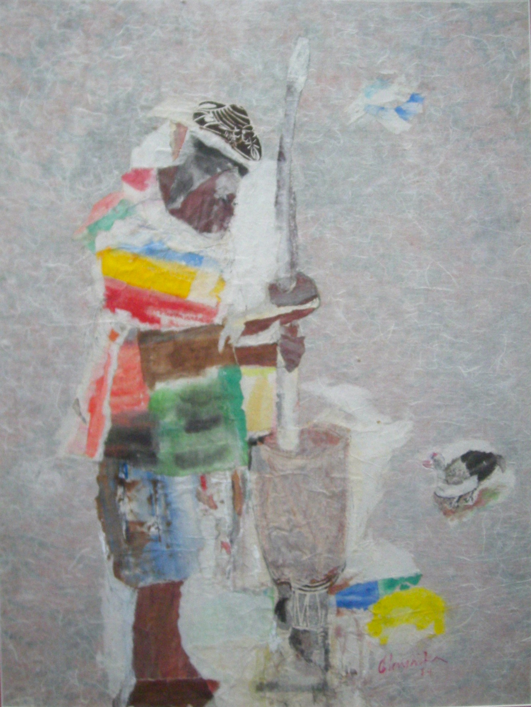

Olayinka Burney-Nicol
1927–1996
Artist Biography
Miranda Olayinka Burney-Nicol, who signed her work Olayinka, was born in 1927 into a Kriole family in Freetown, capital of Sierra Leone. After schooling in 1949 and a year’s teaching in Sierra Leone, Burney-Nicol secured a scholarship to study in New York, USA and she stayed in the States for five years. In the USA she studied pottery and woodcut printing amongst other arts and had her own music and dance organisation. In 1953 a portrait by Burney-Nicol of Dr Kwame Nkrumah won first prize in an exhibition of black artists in Newark, New Jersey. In 1954 she moved to England, studying mural painting under a SierraLeone government scholarship at Central School of Arts and Crafts before returning to Freetown in 1958. This is where she remained other than the last few years of her life. During her time in the USA and England Burney-Nicol travelled extensively in Europe, Mexico and elsewhere and so had been exposed widely to international modern art. Perhaps because of this she was appointed the (only) Government Artist for Sierra Leone. She worked in numerous media, from concrete murals through oils and watercolours to textiles, woodworking and monoprints and always tried to marry her African sensibilities with western art techniques. Her art ranged in style but generally retained an expressionist element.

My Duckling, 1984